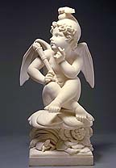

Sitting in Mangrove Valley chasing lightbeams
Everything wanders from baby to Z
Baby, baby, pretty, young on Tuesday
Old like a rum drinking demon at tea
Baby, baby, tell me what's the matter
Why, why tell me, what's your why now?
Tell me why will you never come home?
Tell me what's your reason if you got a good one
Everywhere I go
The people all know
Everyone's doin' that rag
Take my line go fishing for a Tuesday
Maybe take my supper, eat it down by the sea
Gave my baby twenty, forty good reasons
Couldn't find any better ones in the morning at three
Rain gonna come but the rain gonna go, you know
Stepping off sharply from the rank and file
Awful cold and dark like a dungeon
Maybe get a little bit darker 'fore the day
Hipsters, tripsters,
real cool chicks, sir,
everyone's doin' that rag
You needn't gild the lily, offer jewels to the sunset
No one is watching or standing in your shoes
Wash your lonely feet in the river in the morning
Everything promised is delivered to you
Don't neglect to pick up what your share is
All the winter birds are winging home now
Hey Love, go and look around you
Nothing out there you haven't seen before now
But you can wade in the water
and never get wet
if you keep on doin' that rag
One eyed jacks and the deuces are wild
The aces are crawling up and down your sleeve
Come back here, Baby Louise,
and tell me the name
of the game that you play
Is it all fall down?
Is it all go under?
Is it all fall down, down, down
Is it all go under?
Everywhere I go
the people all know
everybody's doin' that rag
Quite a few songs in American popular music have had titles similar to this one:
"Ev'rybody's doin' it, doin' it, doin' it;
Ev'rybody's doin' it, doin, it, doin' it.
See that rag-time couple over there,
Watch them throw their shoulder in the air,
Snpa their finger, honey, I declare,
It's a bear, it's a bear, it's a bear, there!"
"Ignis fatuus: (foolish fire): 1. a light that sometimes appears in the night over marshy ground and is often attributable to the combustion of gas from decomposed organic matter. 2. A deceptive goal or hope." --Webster's New Collegiate Dictionary.

Will o' the Wisp
marble
32 1/2 x 16 3/4 x 17 in. (82.5 x 42.5 x 43.2 cm.)
Smithsonian American Art Museum
According to a study of the meaning of African American spirituals, Wade in the Water:
"An example of a song composed for one purpose, but used secretly for other, masked purposes is the familiar spiritual "Wade in the Water." This song was created to accompany the rite of baptism, but Harriet Tubman used it to communicate to fugitives escaping to the North that they should be sure to "wade in the water" in order to throw bloodhounds off their scent."(p. 50)and later in the same book:
"In commenting on different versions of this song ["Wade in the Water"], observers have noted that it was sung in encouragement and celebration of the spirit of Africans in bondage as they participated in the Christian rite of baptism by immersion. However, these "Christian" baptismal ceremonies frequently served as a mask for a more traditional West African religious ceremony in which a tall cross, driven by a deacon into the river bottom, served as a bridge facilitating communication between the world of the living and the dead. In addition, the cross placed in the water in this manner also symbolized the four corners of the earth and the four winds of heaven. When the cross was utilized in this way by enslaved African worhsipers, it was as if the sun in its orbit was mirrored, revealing the fullness of the Bakongo religion. And since those who lived a good life might experience rebirth in generations of grandchildren, the cycle of death and rebirth could hardly have been more suggestive than through the staff-cross--a symbol of communal renewal.: (p. 66)Also the title of a folk song, with the lines:
"She waded in the water(From Beall, Wee Sing Silly Songs)
And she got her feet all wet."
Thanks, Daniel!
From: Eight Way Wesley [mailto:eightway@kmonkey.com]
Sent: Thursday, February 06, 2003 5:14 AM
Subject: FYI, Doin that Rag trivia bitI'm not sure if this belongs in your annotated gd lyrics page, but fwiw.
So, i'm the author of Windows Solitiare -- written many a year ago while i was in college. My finance at the time (no, we didn't get married), did the graphics. Anyway, the card back with the guy holding the 3 aces has an "Ace crawling up and down his sleeve". It's no coincidence that we listened to a lot of Dead music back then...
-8WW '//es Cherry - wesc@technosis.com www.technosis.com
"Remember who you wanted to be"